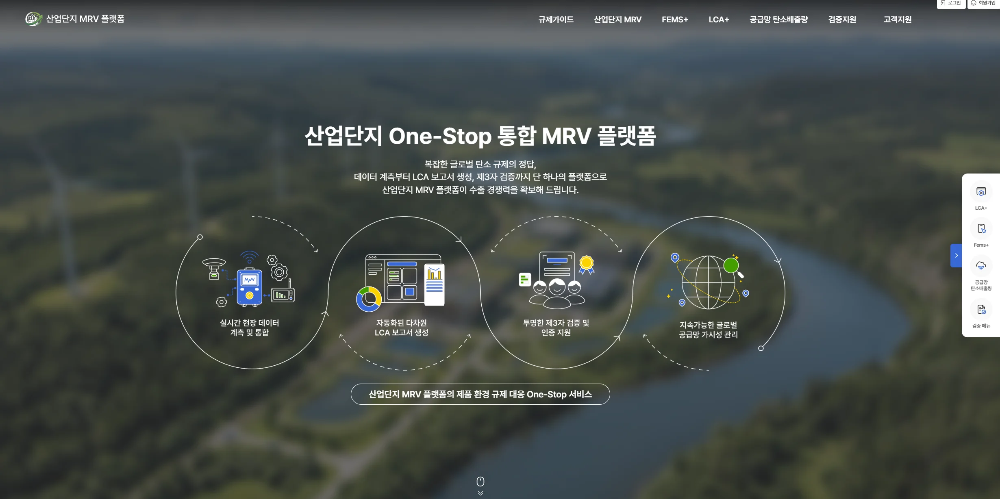

시스템 통합 기획
산업단지 탄소중립 통합관제 플랫폼
다기관 협업을 통한 에너지·탄소 데이터 통합 플랫폼 기획

* 현재 홈페이지 디자인은 리뉴얼되었습니다.
프로젝트 개요
산업단지 입주기업의 에너지 계측 데이터와 탄소배출량 산정 기능을 연계하는 통합 플랫폼 구축 프로젝트입니다.
기존에 별도로 운영되는 에너지관리시스템(FEMS+)과 탄소관리시스템(LCA+)의 데이터를 연결해, 기업이 실측 데이터를 바탕으로 탄소배출량을 산정하고 관련 업무를 수행할 수 있도록 하는 것이 목적이었습니다.
기획 리드로서 현업 기획자와 개발 PL 사이의 요구사항을 조율하고 시스템 연계 방향과 기술적 구현 가능성을 검토했습니다.
핵심 과제 01
서로 다른 시스템의 데이터 연계
FEMS+와 LCA+는 서로 다른 목적과 데이터 구조를 가진 시스템입니다.
따라서 두 시스템을 연결하기 위해서는 어떤 데이터를 주고받아야 하는지, 각 데이터가 산정 과정에서 어떤 의미를 갖는지 정의해야 했습니다.
개발 PL과 협업해 연계 프로세스와 API 인터페이스를 검토하고, 데이터 흐름과 시스템 간 역할을 구체화했습니다.
관련 산출물 · 화면
핵심 과제 02
컨소시엄 이해관계자 조율
프로젝트에는 여러 기업이 참여했으며 각 참여사의 업무 범위와 일정, 우선순위가 달랐습니다.
전체 프로젝트의 진행을 위해 담당자별 요구사항과 선행 작업을 확인하고, 필요한 협의 사항을 조정했습니다.
특히 시스템 연계는 한쪽의 개발만으로 완료되지 않으므로 인터페이스 정의와 개발 일정에 대한 협의가 중요했습니다.
결과
- FEMS+와 LCA+ 연계를 위한 프로세스 및 API 설계
- 시스템 간 데이터 흐름과 연계 요구사항 구체화
- 컨소시엄 참여 조직 간 일정 및 요구사항 조율
- 프로젝트 1차 완료 및 외부 시연 수행
회고
시스템 통합 프로젝트는 개별 기능의 완성도만으로 성공할 수 없습니다.
서로 다른 조직이 동일한 데이터와 업무 흐름을 이해하고, 각자의 작업을 적절한 시점에 완료해야 전체 서비스가 동작합니다.
이 프로젝트를 통해 기술 설계와 이해관계자 조율이 분리된 업무가 아니라 서로 영향을 주는 핵심 관리 영역임을 경험했습니다.